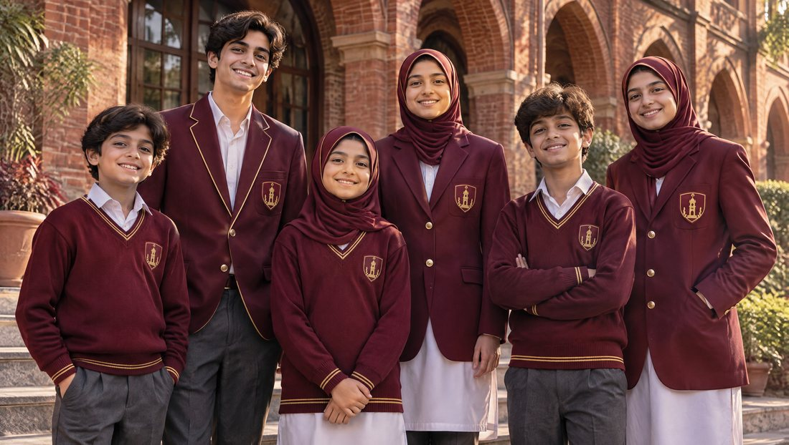

Adabury School · Design system · Uniform · Approved
The Adabury uniform
Claret and white, with the Ghanta Ghar crest on every top. It looks like a leading Cambridge school, keeps every child modestly dressed, and works in Faisalabad's heat. The school hijab is part of the uniform for every girl.
Approved · Hijab compulsory for girls · No tie

Winter uniform across the grades: claret sweaters for juniors, blazers for seniors, gold piping for O Level.
Modest by design
Long sleeves for girls in every season, knee-length tunics over straight trousers, and loose cuts for everyone.
Hijab as uniform
Every girl wears the official school hijab: claret with a gold edge in winter, white with a claret edge in summer, claret jersey for PE.
Made for 45 °C
Cotton next to the skin, no blazer or sweater in summer, and lighter fabrics from April to October.
Made in Faisalabad
Shirting and tunic fabric from Faisalabad mills: a local story for parents and easy reordering.
Winter uniform
1 November to 31 March
Juniors wear the claret sweater. The blazer marks the move to senior school in Grade 6. O Level students earn gold piping on the blazer, a visible step up that children look forward to. Shirts are worn with an open collar.
Junior boys
Grade 3 to 5
White cotton shirt, open collar
Claret V-neck sweater, gold tipping, crest
Charcoal trousers, black shoes
Junior girls
Grade 3 to 5
White knee-length tunic, claret piping
Claret V-neck sweater, gold tipping, crest
Claret hijab, gold edge
Senior boys
Grade 6 to 8
Claret blazer, gold buttons, embroidered crest
White shirt, open collar
Charcoal trousers, black shoes
Senior girls
Grade 6 to 8
Claret blazer with crest
White knee-length tunic, claret piping
Claret hijab, gold edge
O Level boys
Grade 9 to 11
Claret blazer with gold piping
White shirt, open collar
Charcoal trousers
O Level girls
Grade 9 to 11
Claret blazer with gold piping
White knee-length tunic
Claret hijab, gold edge
Summer uniform and PE kit
Summer: 1 April to 31 October · PE: all year
Summer is white and claret only, with the crest on every top. Girls keep long sleeves in light cotton lawn. The PE kit has full-length track trousers for everyone and a long-sleeve top for girls, so modest dress never stops a child from playing sport.
Summer · boys
All grades
White short-sleeve cotton shirt, crest pocket
Claret trim on sleeves
Lightweight charcoal trousers
Summer · girls
All grades
White cotton-lawn tunic, long sleeves, crest
Claret piping at neck, cuffs and hem
White hijab, claret edge
PE · boys
All grades
Claret polo, gold collar and chest band
Charcoal track trousers, gold side stripe
White trainers
PE · girls
All grades
Claret long-sleeve sports top, gold collar
Loose charcoal track trousers, gold stripe
Claret jersey sports hijab
The pieces
The details that make the uniform look premium and hard to copy in the market.
Embroidered crest. Gold and claret thread on the blazer pocket (about 65 mm tall), smaller on sweaters, shirts and PE tops.
Gold piping. Only on O Level blazers: lapels, front edges and cuffs.
Gold tipping. A thin gold line on sweater necks, cuffs and hems.
Claret piping. On girls' tunics at the neckline and hem.
Official hijabs (all girls). Winter: claret with a gold edge. Summer: white with a claret edge. PE: claret jersey, pull-on.
Open collar. No tie in any grade. Shirts have a firm collar that sits neatly without one.
Fabrics and colours
Every colour matches the official logo palette.
Blazer and sweaterAdabury Claret #6E1F2FPoly-viscose suiting (cooler and easier to wash than wool); acrylic-cotton knit for sweaters
Shirts and tunicsWhite100% cotton from a Faisalabad mill. Winter: cotton twill. Summer: cotton lawn.
TrousersCharcoal #3E4249Poly-cotton twill; hides dust better than black or light grey
TrimsOld Gold #C2A15APiping, tipping, PE collars and stripes. Never a main colour.
Jan
Feb
Mar
Apr
May
Jun
Jul
Aug
Sep
Oct
Nov
Dec
Winter, blazer or sweater requiredWinter, blazer optional (changeover month)Summer
Estimated cost per child
Rough Faisalabad market estimates for planning. Real prices will come from supplier quotes and go into the financial model.
Item
Qty per year
Est. PKR each
Est. PKR total
Blazer (Grade 6+) or sweater (Grade 3–5)
1
3,000–7,500
3,000–7,500
White shirts or tunics
3
1,300–2,000
3,900–6,000
Trousers
2
1,500–2,200
3,000–4,400
PE kit (top and track trousers)
1
3,000–4,500
3,000–4,500
Hijabs (girls: winter, summer, PE)
3
600–900
1,800–2,700
Full set, excluding shoes and bag
Boys 12,900–22,400 · Girls 14,700–25,100
The photos on this page are AI-generated visualisations made to agree the design and brief suppliers. They are not real students. Before admissions marketing, replace them with a real photo shoot of the made-up uniform.
Approved
Junior sweater, senior blazer, O Level gold piping, open collar with no tie.
Girls: knee-length tunic over charcoal trousers, long sleeves all year, school hijab compulsory.
Next: supplier quotes and size samples before the first order.